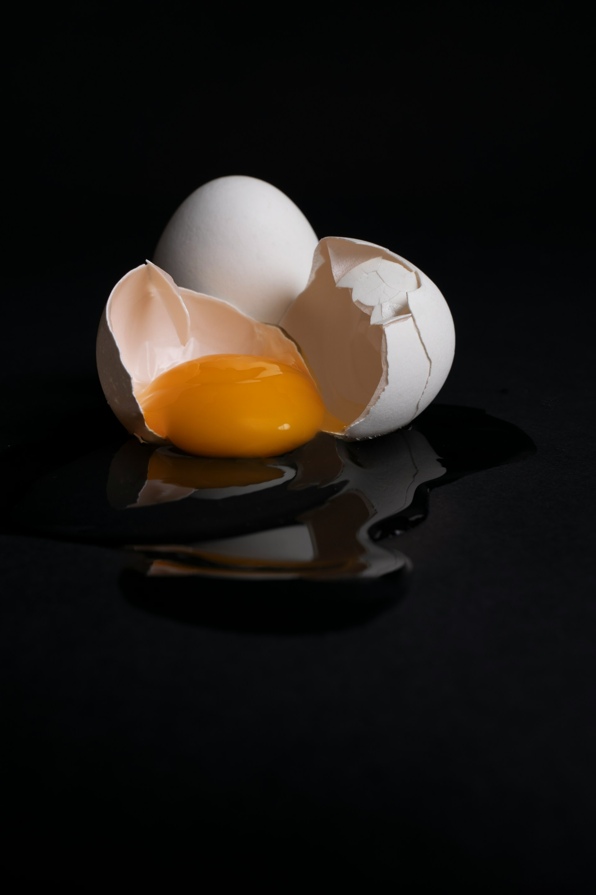
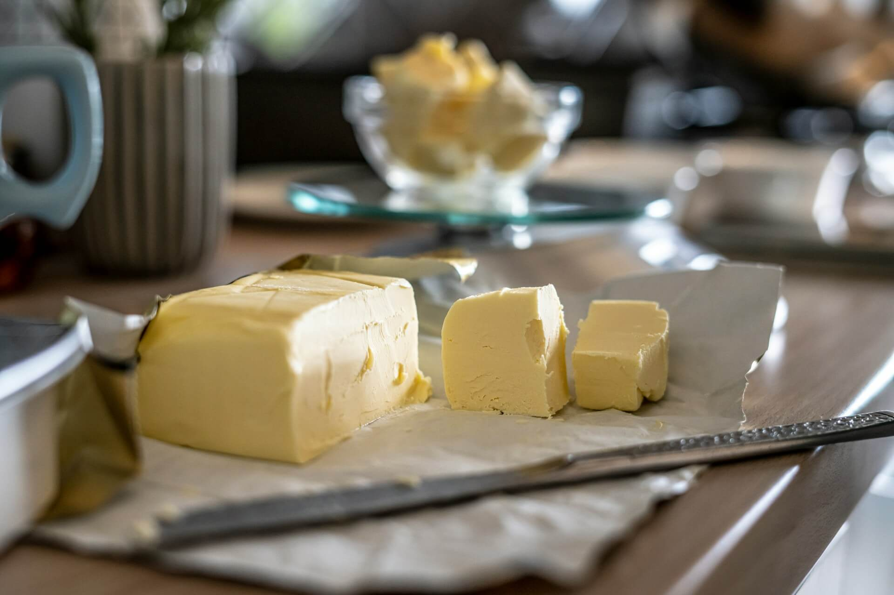
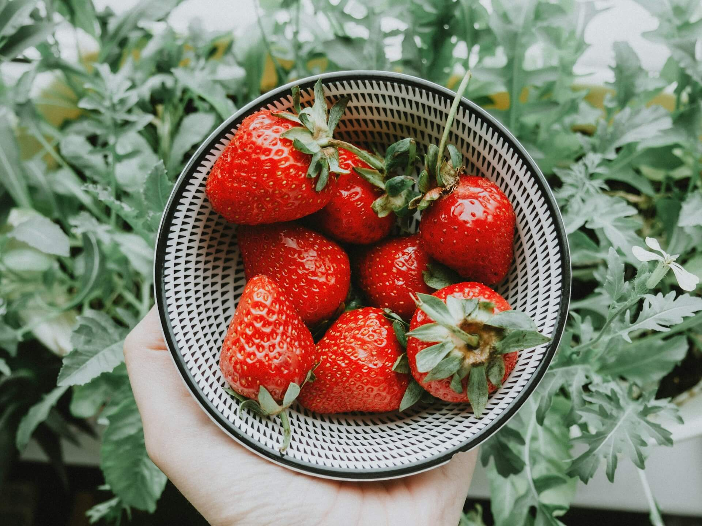
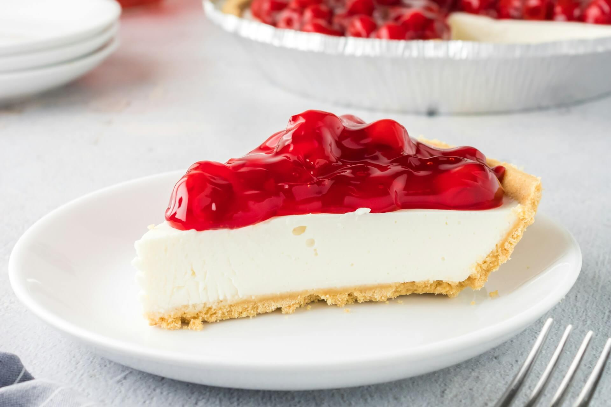

Malzemeler
Tabanı için
- 2 paket burçak bisküvi
- 100 gr tereyağı
Kreması için
- 400 gr labne peyniri
- 200 ml krema
- 1 çay bardağı şeker
- 2 yumurta
- 1 tatlı kaşığı un
- 1 tatlı kaşığı vanilin
Sosu için
- 200 gr çilek
- 2 yemek kaşığı şeker
- 1 tatlı kaşığı nişasta
- Yarım çay bardağı su
Malzeme Görselleri



Hazırlık Aşamaları
- Bisküvileri robottan geçirip tereyağı ile karıştırın, kalıba bastırın, dolaba alın.
- Krema malzemelerini çırpıp tabana dökün.
- 160°C fırında 45 dakika pişirin, sonra soğumaya bırakın.
- Çilekleri şeker, su ve nişasta ile pişirip sos hazırlayın.
- Soğuyan cheesecake’in üzerine sosu dökün, 1 gece dinlendirin.
Sonuç

Afiyet olsun! 🍓